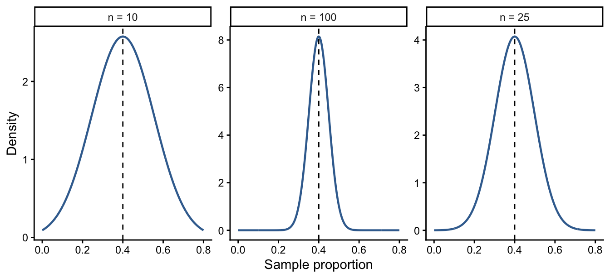

9 Sampling Distributions
9.1 The Question
NoteCentral question
How can a sample tell us something about a population when different samples produce different results?
Public opinion polls, victimization surveys, and studies of criminal justice agencies rarely measure every member of the population. Instead, researchers collect a sample and use it to learn about the larger group.
This creates a challenge: random samples from the same population will not be identical. One sample might estimate that 30% of residents are afraid to walk alone near their homes, while another might estimate 34%. A third might produce 28%. Which result should we trust?
The answer begins with sampling distributions. They show how much a sample statistic would vary across repeated random samples and provide the bridge from description to statistical inference.
9.2 What You Will Learn
After completing this chapter, you should be able to:
- Distinguish a population parameter from a sample statistic.
- Explain sampling variability.
- Describe how a sampling distribution is created.
- Explain the center and spread of a sampling distribution.
- Calculate and interpret the standard error of a sample proportion.
- Explain how sample size affects precision.
- Use a z-score to evaluate a sample proportion.
9.3 Populations, Samples, Parameters, and Statistics
A population is the complete set of cases we want to understand. A sample is the subset of cases actually observed.
A numerical description of a population is a parameter. A numerical description calculated from a sample is a statistic.
| Quantity | Population parameter | Sample statistic |
|---|---|---|
| Mean | \(\mu\) | \(\bar{x}\) |
| Proportion | \(\pi\) | \(\hat{p}\) |
Suppose the true proportion of residents who are afraid to walk alone near home is 0.30:
\[ \pi=0.30 \]
If 34% of respondents in one random sample answer yes:
\[ \hat{p}=0.34 \]
The sample statistic is an estimate of the population parameter. It is not expected to match the parameter perfectly.
ImportantParameters and statistics describe different groups
A parameter describes the population. A statistic describes the sample. Statistical inference uses a sample statistic to learn about an unknown population parameter.
9.4 Sampling Variability
Imagine repeatedly selecting random samples of the same size from one population. The samples will contain different cases and will usually produce different statistics. This natural difference is called sampling variability.
Sampling variability does not necessarily indicate an error. It is an expected result of random sampling. Even well-designed random samples vary by chance.
Suppose a population proportion is \(\pi=0.30\). Five random samples might produce:
| Sample | Sample proportion, \(\hat{p}\) |
|---|---|
| 1 | 0.27 |
| 2 | 0.32 |
| 3 | 0.29 |
| 4 | 0.35 |
| 5 | 0.28 |
The values differ, but they are centered near the population proportion.
9.5 What Is a Sampling Distribution?
A sampling distribution is the distribution of a statistic calculated from all possible random samples of the same size from a population.
To imagine one:
- Draw a random sample of size \(n\).
- Calculate a statistic, such as \(\hat{p}\) or \(\bar{x}\).
- Return to the population and draw another random sample of the same size.
- Calculate the statistic again.
- Repeat the process many times.
- Plot all the resulting statistics.
The resulting graph is not a distribution of individual people or cases. It is a distribution of sample statistics.
WarningThree distributions can be confused
- A population distribution contains individual values for the entire population.
- A sample distribution contains individual values in one sample.
- A sampling distribution contains statistics calculated from many samples.
9.6 The Center of a Sampling Distribution
The sampling distribution of a sample proportion is centered at the population proportion:
\[ \mu_{\hat{p}}=\pi \]
Similarly, the sampling distribution of a sample mean is centered at the population mean:
\[ \mu_{\bar{x}}=\mu \]
An individual sample may overestimate or underestimate the population value. Across many random samples, however, the statistics balance around the parameter. This is why random sampling can provide useful estimates.
9.7 The Spread: Standard Error
A sampling distribution also has variation. Its standard deviation is called the standard error.
For a sample proportion:
\[ SE_{\hat{p}}=\sqrt{\frac{\pi(1-\pi)}{n}} \]
where:
- \(\pi\) is the population proportion; and
- \(n\) is the number of cases in each sample.
The standard error describes the typical amount of chance variation in sample proportions. A smaller standard error indicates that estimates tend to cluster more closely around the population parameter.
WarningSample size is not the number of repeated samples
In the formula, \(n\) is the number of cases within each sample. It is not the number of samples used to imagine or simulate the sampling distribution.
9.8 Sample Size and Precision
Suppose \(\pi=0.40\). The standard error changes as the sample size increases:
| Sample size | Standard error |
|---|---|
| \(n=10\) | \(\sqrt{0.40(0.60)/10}=0.1549\) |
| \(n=25\) | \(\sqrt{0.40(0.60)/25}=0.0980\) |
| \(n=100\) | \(\sqrt{0.40(0.60)/100}=0.0490\) |
Larger samples have smaller standard errors. Their sample proportions tend to fall closer to the population proportion.
NotePrecision is not the same as accuracy
A larger random sample reduces chance variation. It does not correct biased selection, poor measurement, missing cases, or other systematic problems.
9.9 Why Sampling Distributions Become Normal
Under appropriate conditions, sampling distributions are approximately normal. This result is connected to the central limit theorem.
For sample means, the sampling distribution becomes increasingly normal as sample size grows, even when the population itself is not perfectly normal. For sample proportions, the approximation works when the expected numbers of cases in both categories are sufficiently large.
The important practical lesson is that a sample statistic can often be evaluated using the normal curve. We can locate it with a z-score and determine whether it is common or unusual under an assumed population value.
9.10 A z-Score for a Sample Proportion
In Chapter 8, a z-score measured the distance of an individual value from a mean in standard deviation units. For a sample proportion, we use the same logic but divide by the standard error:
\[ z=\frac{\hat{p}-\pi}{SE_{\hat{p}}} \]
The score tells us how many standard errors the sample proportion falls above or below the population proportion.
9.11 Worked Example: Property-Crime Proportions
Suppose the population proportion of property crimes in Smashitburg is \(\pi=0.30\). A random sample of 150 incidents produces \(\hat{p}=0.41\).
9.11.1 Step 1: Calculate the Standard Error
\[ SE_{\hat{p}} =\sqrt{\frac{0.30(1-0.30)}{150}} =\sqrt{0.0014} =0.0374 \]
9.11.2 Step 2: Calculate the z-Score
\[ z=\frac{0.41-0.30}{0.0374}=2.94 \]
The sample proportion is 2.94 standard errors above the population proportion.
9.11.3 Step 3: Find the Probability
The standard normal table gives an area of 0.4984 between the mean and \(z=2.94\):
\[ P(Z>2.94)=0.50-0.4984=0.0016 \]
If the population proportion is 0.30, a random sample of 150 cases would produce a proportion of 0.41 or higher only about 0.16% of the time. The result is unusual under that assumption.
9.12 Why Sample Size Changes the Conclusion
Now suppose the same sample proportion, \(\hat{p}=0.41\), comes from only 60 cases.
\[ SE_{\hat{p}} =\sqrt{\frac{0.30(1-0.30)}{60}} =0.0592 \]
\[ z=\frac{0.41-0.30}{0.0592}=1.86 \]
The upper-tail probability is:
\[ P(Z>1.86)=0.0314 \]
The sample proportion is the same in both examples, but the larger sample provides stronger evidence that the difference is not simply chance variation.
| Sample size | \(\hat{p}\) | Standard error | z-score | Probability of this value or higher |
|---|---|---|---|---|
| 60 | 0.41 | 0.0592 | 1.86 | 0.0314 |
| 150 | 0.41 | 0.0374 | 2.94 | 0.0016 |
ImportantThe statistic alone is not enough
The meaning of a sample result depends partly on its standard error. The same observed difference is more unusual when it comes from a larger random sample.
9.13 Check Your Understanding
Suppose \(\pi=0.40\) and a random sample has \(n=100\).
- Calculate the standard error of the sample proportion.
- Would the standard error be larger or smaller if \(n=25\)?
- Explain what a smaller standard error means.
- If \(\hat{p}=0.50\), calculate its z-score.
NoteCheck your answers
- \(SE_{\hat{p}}=\sqrt{0.40(0.60)/100}=0.0490\).
- It would be larger: \(\sqrt{0.40(0.60)/25}=0.0980\).
- A smaller standard error means sample proportions tend to cluster more closely around the population proportion.
- \(z=(0.50-0.40)/0.0490=2.04\). The sample proportion is approximately 2.04 standard errors above the population proportion.
9.14 Data Investigation: Sampling with Skittles
This activity demonstrates how sample size and repeated sampling affect a sampling distribution.
9.14.1 Round 1
- Randomly draw 5 Skittles.
- Calculate the proportion that are red.
- Replace and mix the Skittles.
- Repeat until your group has three sample proportions.
9.14.2 Round 2
Repeat the process using samples of 10 Skittles. Pool results across the class to produce at least 20 sample proportions.
For each round:
- Plot the sample proportions.
- Calculate their mean.
- Describe the center and spread.
- Compare the distribution based on \(n=5\) with the distribution based on \(n=10\).
- Explain why the sample proportions differ even though they come from the same population.
9.15 Test Your Knowledge: Two Random Samples
9.15.1 The Scenario
The Boyznblew City Police Department knows that the population proportion of property crimes is \(\pi=0.30\). Analysts obtain a sample proportion of \(\hat{p}=0.41\) from each of two random samples:
- Sample 1 contains 150 cases.
- Sample 2 contains 60 cases.
9.15.2 Your Task
For each sample:
- Calculate the standard error.
- Calculate the z-score.
- Find the probability of a sample proportion greater than 0.41.
- Find the probability of a sample proportion less than 0.41.
- Identify which result is more unusual and explain why.
- Explain what these calculations assume about the sampling process.
NoteReview the answers
| Sample | \(n\) | Standard error | z-score | \(P(\hat{p}>0.41)\) | \(P(\hat{p}<0.41)\) |
|---|---|---|---|---|---|
| 1 | 150 | 0.0374 | 2.94 | 0.0016 | 0.9984 |
| 2 | 60 | 0.0592 | 1.86 | 0.0314 | 0.9686 |
The result from Sample 1 is more unusual. Its larger sample size produces a smaller standard error, placing 0.41 farther from 0.30 in standard-error units.
The calculations assume random, sufficiently independent observations and a population process for which the normal approximation is reasonable. They do not account for biased selection or poor measurement.
9.16 Project Connection
- Identify a proportion you could calculate from your semester data.
- State the population parameter that the sample proportion might estimate.
- Identify the sample size used to calculate the statistic.
- Explain how a larger sample would affect sampling variability.
- Identify one possible source of bias that a larger sample would not solve.
9.17 Looking Ahead
A sampling distribution tells us how a statistic varies across random samples. The next chapter uses that knowledge for estimation. We will use a sample statistic and its standard error to construct a range of plausible values for an unknown population parameter.
9.18 Chapter Summary
- A parameter describes a population; a statistic describes a sample.
- Random samples from the same population usually produce different statistics.
- A sampling distribution contains a statistic calculated from many samples of the same size.
- Sampling distributions are centered at the corresponding population parameter.
- Standard error describes the expected sampling variability of a statistic.
- Larger samples produce smaller standard errors and more precise estimates.
- Under appropriate conditions, sampling distributions are approximately normal.
- A z-score locates a sample statistic in its sampling distribution.
- The same statistic is more unusual when it comes from a larger random sample.
- Larger samples reduce random sampling error but do not eliminate systematic bias.
9.19 Key Terms
- Central limit theorem: The principle that sampling distributions become increasingly normal under appropriate conditions as sample size grows.
- Parameter: A numerical description of a population.
- Population: The complete set of cases a researcher wants to understand.
- Sample: A subset of cases selected from a population.
- Sampling distribution: The distribution of a statistic across all possible samples of the same size.
- Sampling variability: Natural differences among statistics produced by different random samples.
- Standard error: The standard deviation of a sampling distribution.
- Statistic: A numerical description calculated from sample data.